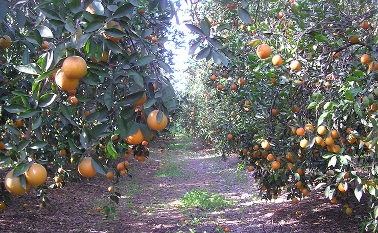
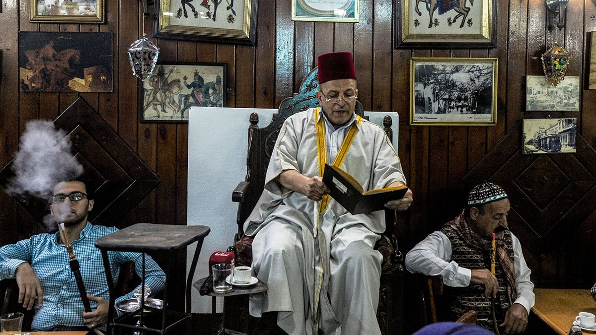
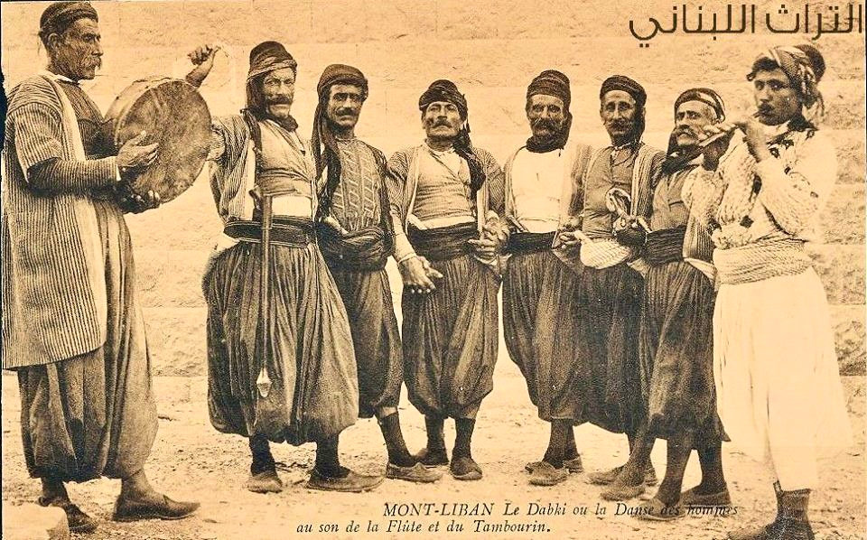
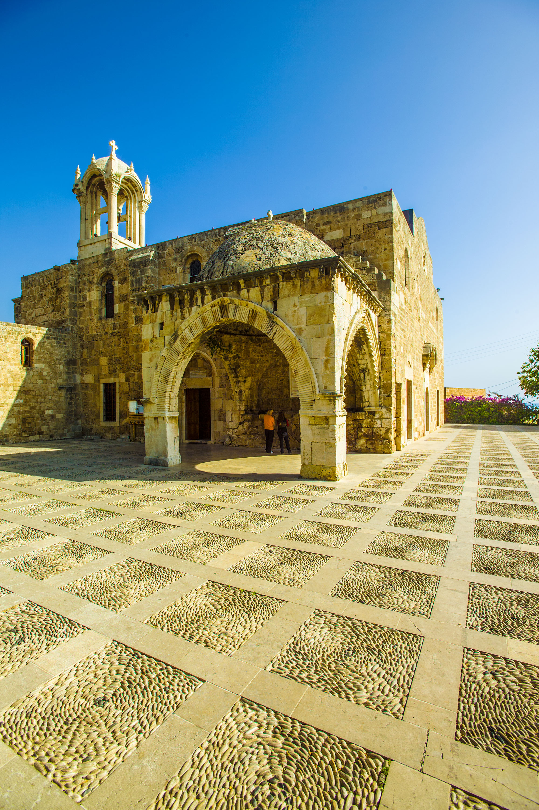

Nafir Suriyya Portal
بوَّابَةُ نَفِيرِ سُورِيَّة
Social Media
Instagram Page
Eastern Christianity Series
Cities Series
Youtube Page
Qawmiya Playlist
Butrus al-Bustani - NAFIR SURIYYA (1860)
Complete Document — All 11 Clarions
Manifesto
Map Archives (386 Maps Categorised by Publishing Date)




Photo Gallery
Where to start - Sources
Complete King–Crane Commission
King–Crane Commission Archives
Strabo — Geography (7 BC)
Strabo — Geography (Alt)
Herodotus — Histories (500 BC)
Pliny — Natural Histories (77 AD)
Diodorus Siculus — Library of History (50 BC)
Khalil Gibran — Letter to my Syrian Countrymen (1926)
George Antonius — Arab Awakening (1938)
نَفِير سُورِيَّة
ثَقَافَةٌ وَحِرَاكٌ
NAFIR SURIYYA
An Eternal National Identity